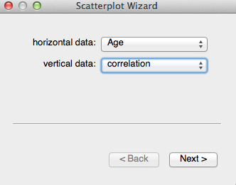
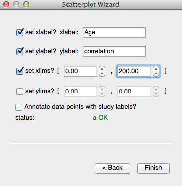
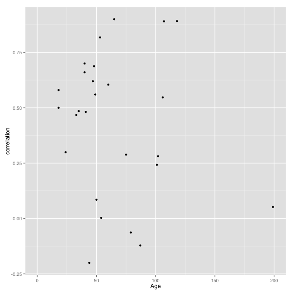
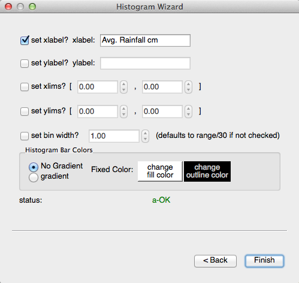
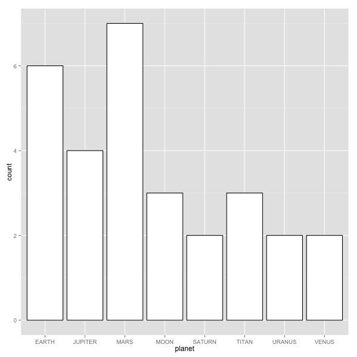
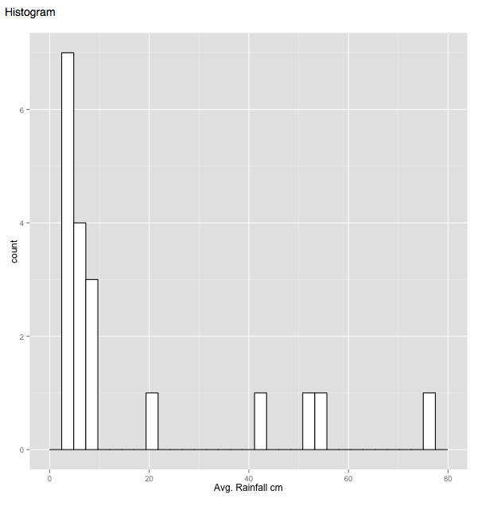
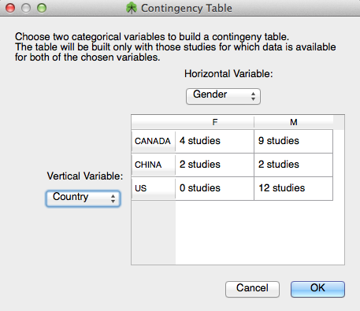

OpenMEE offers various tools to help you visually explore your data including scatterplots and histograms.
Scatterplots
Scatterplots are useful for seeing relationships between two quantitative variables. You can make a scatter plot in OpenMEE by choosing 'Scatterplot' from the 'Data Exploration' menu.

Figure 1. Choosing Scatterplot Data

Figure 2. Scatterplot parameters
You are presented with a wizard which will allow to choose the source of your data for each axis, then choose custom axis labels and limits. You can also choose to annotate each data point with the study that the point comes from.
Here is a scatterplot obtained by comparing Age with Correlation:

Figure 3. Example Scatterplot
Histograms
Histograms are a way to look at data, one variable at a time. For quantitative data, the values are 'binned' and then counted. For categorical variables, the count of each level corresponds to the height of each bar. In the figures below, we see the histogram details screen and also an example of a historgram of quantitative data (rainfall) and categorical data (planet),

Figure 4. Histogram details

Figure 5. Histrogram of planets (categorical variable)

Figure 6. Histogram of rainfall (quantitative variable)
Contingency Table
The contingency table can be used to count the # of studies at each pair of levels between two categorical covariates of interest. This can be useful, for example, when making sure you have enough data for a meta-regression. A contingency table comparing Gender and planet is show below:

Figure 7. Contingency Table